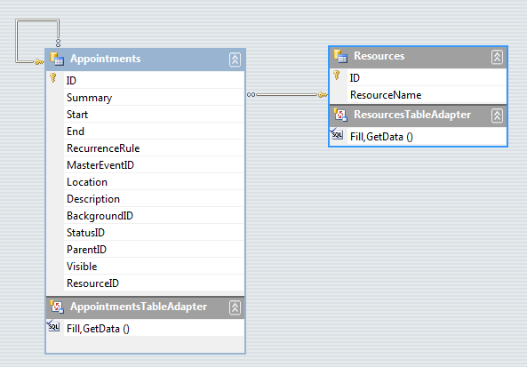

Setting Appointment and Resource relations
One to Many Relations
This covers the case of assigning a single resource to many appointments. When you have a two table relation
(one to many) then you should have an Appointments and a Resources
tables. Appointments should have a field name that relates to the
*Resources *table id (for example ResourceId). If you set
a resource to the appointment, the ResourceId__field should be updated with the correct value.
For __AppointmentMappingInfo you should set the ResourceId
field with the column name that contains the resosurce id (the ResourceId column in the picture below).
The Resources field of the AppointmentMappingInfo should NOT be set to anything.

Additionally, since the type of the ResourceId property in the Appointment class is of type EventId but in the database
it is stored as an integer, you should create the following convert methods:
[C#]
private void SettingAppointmentAndResourceRelations_Load(object sender, EventArgs e)
{
// TODO: This line of code loads data into the 'schedulerDataOneToManyDataSet.Resources' table. You can move, or remove it, as needed.
this.resourcesTableAdapter.Fill(this.schedulerDataOneToManyDataSet.Resources);
// TODO: This line of code loads data into the 'schedulerDataOneToManyDataSet.Appointments' table. You can move, or remove it, as needed.
this.appointmentsTableAdapter.Fill(this.schedulerDataOneToManyDataSet.Appointments);
AppointmentMappingInfo appointmentMapping = new AppointmentMappingInfo();
ResourceMappingInfo resourceMapping = new ResourceMappingInfo();
appointmentMapping.Start = "Start";
appointmentMapping.End = "End";
appointmentMapping.Summary = "Summary";
appointmentMapping.Description = "Description";
appointmentMapping.Location = "Location";
appointmentMapping.BackgroundId = "BackgroundID";
appointmentMapping.StatusId = "StatusID";
appointmentMapping.RecurrenceRule = "RecurrenceRule";
appointmentMapping.ResourceId = "ResourceID";
appointmentMapping.FindBySchedulerProperty("ResourceId").ConvertToDataSource = ConvertResourceToDataSource;
appointmentMapping.FindBySchedulerProperty("ResourceId").ConvertToScheduler = ConvertResourceToScheduler;
resourceMapping.Name = "ResourceName";
resourceMapping.Id = "ID";
this.schedulerBindingDataSource1.ResourceProvider.Mapping = resourceMapping;
this.schedulerBindingDataSource1.ResourceProvider.DataSource = this.schedulerDataOneToManyDataSet.Resources;
this.schedulerBindingDataSource1.EventProvider.Mapping = appointmentMapping;
this.schedulerBindingDataSource1.EventProvider.DataSource = this.schedulerDataOneToManyDataSet.Appointments;
this.radScheduler1.DataSource = this.schedulerBindingDataSource1;
this.radScheduler1.GroupType = GroupType.Resource;
}
private object ConvertResourceToScheduler(object item)
{
return new EventId(item);
}
private object ConvertResourceToDataSource(object item)
{
EventId resourceId = item as EventId;
if (item != null && resourceId.KeyValue is int)
{
return resourceId.KeyValue;
}
return DBNull.Value;
}
[VB.NET]
Private Sub SettingAppointmentAndResourceRelations_Load(sender As System.Object, e As System.EventArgs) Handles MyBase.Load
'TODO: This line of code loads data into the 'SchedulerDataOneToManyDataSet.Resources' table. You can move, or remove it, as needed.
Me.ResourcesTableAdapter.Fill(Me.SchedulerDataOneToManyDataSet.Resources)
'TODO: This line of code loads data into the 'SchedulerDataOneToManyDataSet.Appointments' table. You can move, or remove it, as needed.
Me.AppointmentsTableAdapter.Fill(Me.SchedulerDataOneToManyDataSet.Appointments)
Dim appointmentMapping As New AppointmentMappingInfo()
Dim resourceMapping As New ResourceMappingInfo()
appointmentMapping.Start = "Start"
appointmentMapping.[End] = "End"
appointmentMapping.Summary = "Summary"
appointmentMapping.Description = "Description"
appointmentMapping.Location = "Location"
appointmentMapping.BackgroundId = "BackgroundID"
appointmentMapping.StatusId = "StatusID"
appointmentMapping.RecurrenceRule = "RecurrenceRule"
appointmentMapping.ResourceId = "ResourceID"
appointmentMapping.FindBySchedulerProperty("ResourceId").ConvertToDataSource = AddressOf ConvertResourceToDataSource
appointmentMapping.FindBySchedulerProperty("ResourceId").ConvertToScheduler = AddressOf ConvertResourceToScheduler
resourceMapping.Name = "ResourceName"
resourceMapping.Id = "ID"
Me.SchedulerBindingDataSource1.ResourceProvider.Mapping = resourceMapping
Me.SchedulerBindingDataSource1.ResourceProvider.DataSource = Me.SchedulerDataOneToManyDataSet.Resources
Me.SchedulerBindingDataSource1.EventProvider.Mapping = appointmentMapping
Me.SchedulerBindingDataSource1.EventProvider.DataSource = Me.SchedulerDataOneToManyDataSet.Appointments
Me.RadScheduler1.DataSource = Me.SchedulerBindingDataSource1
Me.RadScheduler1.GroupType = GroupType.Resource
End Sub
Private Function ConvertResourceToScheduler(ByVal item As Object) As Object
Return New EventId(item)
End Function
Private Function ConvertResourceToDataSource(ByVal item As Object) As Object
Dim resourceId As EventId = TryCast(item, EventId)
If Not item Is Nothing AndAlso TypeOf resourceId.KeyValue Is Integer Then
Return resourceId.KeyValue
End If
Return DBNull.Value
End Function
Many to Many Relations
This covers the case of assigning many resources to many appointments. When you have relations between three tables (many to many)
then you should have three tables: Appointments, Resources *and
*AppointmentsResources. AppointmentResouces *should have two field names:
one for the id of the appointment (AppointmentId), and one for id of the resource
(ResourceId). Here we should have two relations:
one between *Appointments *and *AppointmentsResources, *
and one between *Resources *and *AppointmentsResources.
For the AppointmentMappingInfo you should set the ResourceId__property to the
__ResourceId__field name in the *AppointmentsResources *table,
and for the __Resources you should set the name of the relation between
AppointmentsResources *and *Appointments.
When you associate the resource to the appointment, a new record will be added to
*AppointmentsResources *if there is not such.
This scenario is also demonstrated in the Data Binding Walkthrough article.